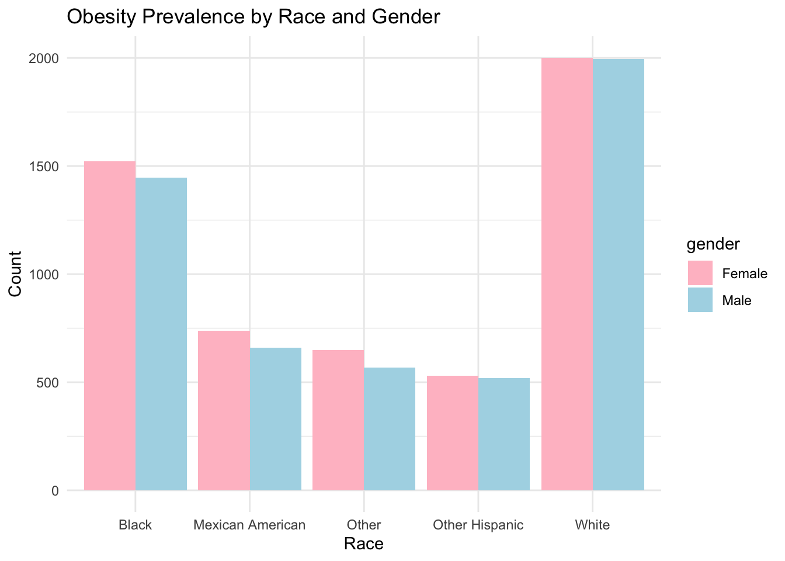
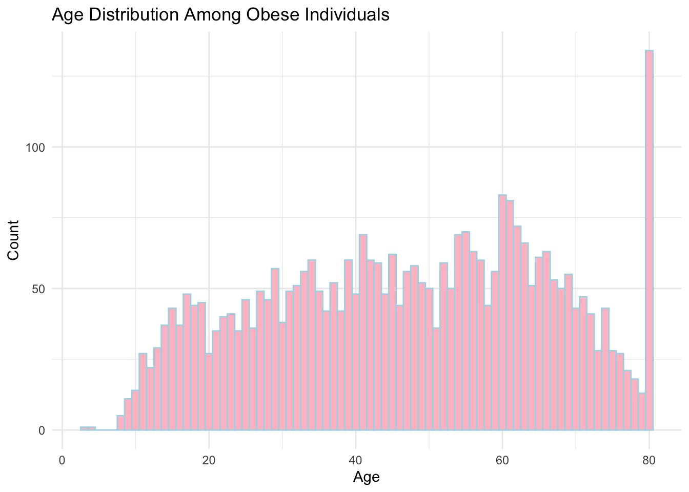
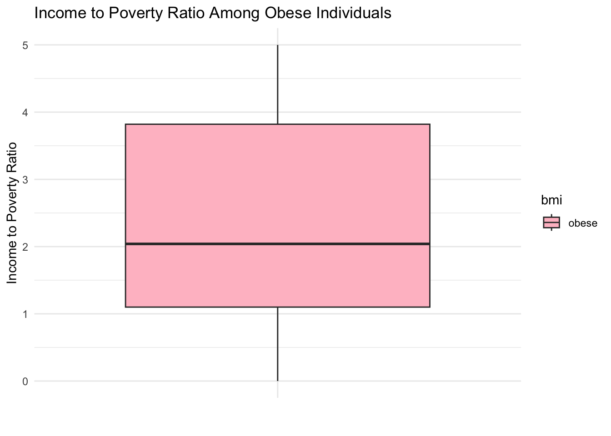
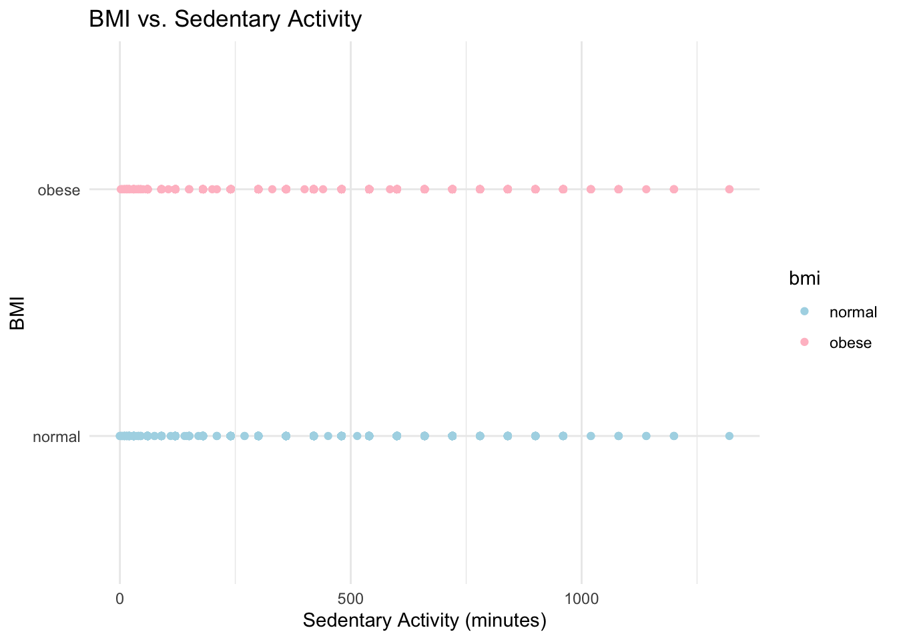
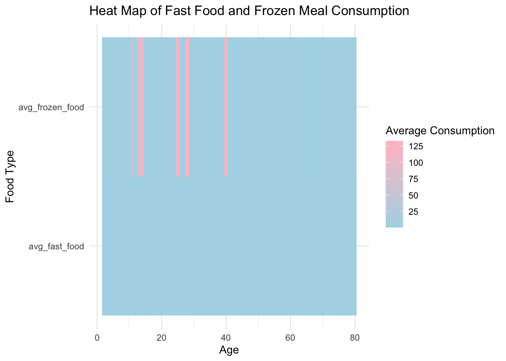

import_df= function(path){
read_xpt(path)
}
obesity=
import_df(path='data/P_BMX.XPT') |>
full_join((import_df(path='data/P_DEMO.XPT')), by='SEQN') |>
full_join((import_df(path='data/P_PAQ.XPT')), by='SEQN')|>
full_join ((import_df(path='data/P_DBQ.XPT')), by='SEQN') |>
select (SEQN,RIAGENDR,RIDAGEYR,DMDMARTZ,INDFMPIR,RIDRETH3,DMDEDUC2,PAD680,BMXBMI,DBD900,DBD910) |>
filter(
!(DMDMARTZ %in% c('77','99','.') ),
!(INDFMPIR == '.'),
!(DMDEDUC2 %in% c('7','9','.') ),
!(PAD680 %in% c('7777', '9999', '.')),
!(BMXBMI =='.'),
!(DBD900 %in% c('7777', '9999', '.')),
!(DBD910 %in% c('7777', '9999', '.'))
) |>
rename(
gender=RIAGENDR,
age=RIDAGEYR,
marital_status=DMDMARTZ,
income_to_poverty=INDFMPIR,
race=RIDRETH3,
education=DMDEDUC2,
sedentary_activity=PAD680,
bmi=BMXBMI,
freq_fast_food=DBD900,
freq_frozen=DBD910
) |>
mutate(
gender = case_match(
gender,
1~"Male",
2~"Female"),
gender = as.factor(gender),
marital_status= case_match(
marital_status,
1~"Married",
2~"Widowed/Divorced/Separated",
3~"Never married"
),
race= case_match(
race,
1~"Mexican American",
2~"Other Hispanic",
3~"White",
4~"Black",
5~"Asian",
6~"Other"
),
education= case_match(
education,
1~"Less than 9th grade",
2~"9-11th grade",
3~"High school graduate" ,
4~"Some college or AA degree",
6~"College graduate or above"
),
bmi =case_when(
bmi<30 ~ 'normal',
bmi>=30 ~'obese'
)
)obesity_race_filtered = obesity |>
filter(!is.na(race) & race != "NA")
ggplot(obesity_race_filtered, aes(x = race, fill = gender)) +
geom_bar(position = "dodge") +
scale_fill_manual(values = c("pink", "lightblue")) +
labs(title = "Obesity Prevalence by Race and Gender",
x = "Race",
y = "Count") +
theme_minimal()
Interpretation: The bar chart displays the prevalence of obesity across different racial categories, differentiated by gender. It shows that the White population has the highest count of obesity cases, with a notable number of cases in both genders. The Black population follows, with females being higher than males, whereas the “Other Hispanic” categories have the lowest count of obesity cases.
ggplot(subset(obesity, bmi == "obese"), aes(x = age)) +
geom_histogram(binwidth = 1, fill = "pink", color = "lightblue") +
labs(title = "Age Distribution of Obese Individuals",
x = "Age",
y = "Count") +
theme_minimal()
Interpretation: The histogram indicates that obesity is present across all age groups, with a relatively uniform distribution from young adulthood to late middle age. There’s a significant peak in obesity cases among individuals in their late 50s to early 60s. After this peak, the number of obese individuals declines sharply for those in the older age groups.
ggplot(subset(obesity, bmi == "obese"), aes(y = income_to_poverty, x = "", fill = bmi)) +
geom_boxplot() +
scale_fill_manual(values = c("pink")) +
labs(title = "Income to Poverty Ratio Among Obese Individuals",
x = "",
y = "Income to Poverty Ratio") +
theme_minimal()
Interpretation: The box plot shows the distribution of the income to poverty ratio among obese individuals. The data is spread across a range of ratios, mostly concentrated between 1 and 4, with the median around 2. This suggests that individuals with obesity come from a range of economic backgrounds, but there’s a tendency towards lower income to poverty ratios.
obesity_sedentary_activity_filtered = obesity |>
filter(!is.na(sedentary_activity))
ggplot(obesity_sedentary_activity_filtered, aes(x = sedentary_activity, y = bmi, color = bmi)) +
geom_point() +
scale_color_manual(values = c("normal" = "lightblue", "obese" = "pink")) +
labs(title = "BMI vs. Sedentary Activity",
x = "Sedentary Activity (minutes)",
y = "BMI") +
theme_minimal()
Interpretation: The scatter plot presents a comparison of sedentary activity (in minutes) with BMI categories (normal and obese). Points are relatively evenly distributed across the range of sedentary activity for both BMI categories, suggesting no clear or immediate correlation between the amount of sedentary activity and BMI category within this dataset. It indicates that individuals classified as obese and those with a normal BMI report similar patterns of sedentary behavior.
aggregated_data = obesity |>
group_by(age, gender) |>
summarize(avg_fast_food = mean(freq_fast_food, na.rm = TRUE),
avg_frozen_food = mean(freq_frozen, na.rm = TRUE))## `summarise()` has grouped output by 'age'. You can override using the `.groups`
## argument.melted_data = melt(aggregated_data, id.vars = c("age", "gender"))
ggplot(melted_data, aes(x = age, y = variable, fill = value)) +
geom_tile() +
scale_fill_gradient(low = "lightblue", high = "pink") +
labs(title = "Heat Map of Fast Food and Frozen Meal Consumption",
x = "Age",
y = "Food Type",
fill = "Average Consumption") +
theme_minimal()
Interpretation：The heat map shows the average consumption of fast food and frozen meals across different ages. Consumption levels are indicated by the color intensity, with darker shades of pink representing higher consumption. From the visualization, it appears that there are specific age groups that consume fast food and frozen meals more frequently, as indicated by the vertical pink bars, which suggest peaks in consumption at those ages.
library(dplyr)
library(readxl)gender_summary <- obesity %>%
count(gender) %>%
mutate(Percentage = n / sum(n) * 100)
print(gender_summary)## # A tibble: 2 × 3
## gender n Percentage
## <fct> <int> <dbl>
## 1 Female 5800 50.9
## 2 Male 5588 49.1marital_status_summary <- obesity %>%
count(marital_status) %>%
mutate(Percentage = n / sum(n) * 100)
print(marital_status_summary)## # A tibble: 4 × 3
## marital_status n Percentage
## <chr> <int> <dbl>
## 1 Married 4216 37.0
## 2 Never married 1360 11.9
## 3 Widowed/Divorced/Separated 1599 14.0
## 4 <NA> 4213 37.0age_summary <- obesity %>%
summarise(
Count = n(),
Unique = n_distinct(age),
Mean = mean(age, na.rm = TRUE),
Std_Dev = sd(age, na.rm = TRUE),
Min = min(age, na.rm = TRUE),
`25th_Pctl` = quantile(age, 0.25, na.rm = TRUE),
Median = median(age, na.rm = TRUE),
`75th_Pctl` = quantile(age, 0.75, na.rm = TRUE),
Max = max(age, na.rm = TRUE)
)
print(age_summary)## # A tibble: 1 × 9
## Count Unique Mean Std_Dev Min `25th_Pctl` Median `75th_Pctl` Max
## <int> <int> <dbl> <dbl> <dbl> <dbl> <dbl> <dbl> <dbl>
## 1 11388 79 35.6 24.2 2 13 33 57 80income_to_poverty_summary <- obesity %>%
summarise(
Count = n(),
Unique = n_distinct(income_to_poverty),
Mean = mean(income_to_poverty, na.rm = TRUE),
Std_Dev = sd(income_to_poverty, na.rm = TRUE),
Min = min(income_to_poverty, na.rm = TRUE),
`25th_Pctl` = quantile(income_to_poverty, 0.25, na.rm = TRUE),
Median = median(income_to_poverty, na.rm = TRUE),
`75th_Pctl` = quantile(income_to_poverty, 0.75, na.rm = TRUE),
Max = max(income_to_poverty, na.rm = TRUE)
)
print(income_to_poverty_summary)## # A tibble: 1 × 9
## Count Unique Mean Std_Dev Min `25th_Pctl` Median `75th_Pctl` Max
## <int> <int> <dbl> <dbl> <dbl> <dbl> <dbl> <dbl> <dbl>
## 1 11388 472 2.42 1.63 0 1.04 1.99 3.90 5education_summary <- obesity %>%
count(education) %>%
mutate(Percentage = n / sum(n) * 100)
print(education_summary)## # A tibble: 5 × 3
## education n Percentage
## <chr> <int> <dbl>
## 1 9-11th grade 763 6.70
## 2 High school graduate 1722 15.1
## 3 Less than 9th grade 475 4.17
## 4 Some college or AA degree 2406 21.1
## 5 <NA> 6022 52.9race_summary <- obesity %>%
count(race) %>%
mutate(Percentage = n / sum(n) * 100)
print(race_summary)## # A tibble: 6 × 3
## race n Percentage
## <chr> <int> <dbl>
## 1 Black 2970 26.1
## 2 Mexican American 1397 12.3
## 3 Other 1217 10.7
## 4 Other Hispanic 1050 9.22
## 5 White 3995 35.1
## 6 <NA> 759 6.66What’s left for baseline: sedentary_activit, BMI, freq_fast_food, freq_frozen
sedentary_activity_summary <- obesity %>%
summarise(
Count = n(),
Mean = mean(sedentary_activity, na.rm = TRUE),
Std_Dev = sd(sedentary_activity, na.rm = TRUE),
Min = min(sedentary_activity, na.rm = TRUE),
`25th_Pctl` = quantile(sedentary_activity, 0.25, na.rm = TRUE),
Median = median(sedentary_activity, na.rm = TRUE),
`75th_Pctl` = quantile(sedentary_activity, 0.75, na.rm = TRUE),
Max = max(sedentary_activity, na.rm = TRUE)
)
print(sedentary_activity_summary)## # A tibble: 1 × 8
## Count Mean Std_Dev Min `25th_Pctl` Median `75th_Pctl` Max
## <int> <dbl> <dbl> <dbl> <dbl> <dbl> <dbl> <dbl>
## 1 11388 338. 203. 0 180 300 480 1320bmi_summary <- obesity %>%
count(bmi) %>%
mutate(Percentage = n / sum(n) * 100)
print(bmi_summary)## # A tibble: 2 × 3
## bmi n Percentage
## <chr> <int> <dbl>
## 1 normal 7922 69.6
## 2 obese 3466 30.4fast_food_summary <- obesity %>%
group_by(gender, age) %>%
summarise(Avg_Fast_Food = mean(freq_fast_food, na.rm = TRUE))## `summarise()` has grouped output by 'gender'. You can override using the
## `.groups` argument.print(fast_food_summary)## # A tibble: 158 × 3
## # Groups: gender [2]
## gender age Avg_Fast_Food
## <fct> <dbl> <dbl>
## 1 Female 2 1.66
## 2 Female 3 1.78
## 3 Female 4 1.40
## 4 Female 5 1.42
## 5 Female 6 1.79
## 6 Female 7 1.67
## 7 Female 8 1.77
## 8 Female 9 1.81
## 9 Female 10 2.01
## 10 Female 11 1.70
## # ℹ 148 more rowsfrozen_food_summary <- obesity %>%
group_by(gender, age) %>%
summarise(Avg_Frozen_Food = mean(freq_frozen, na.rm = TRUE))## `summarise()` has grouped output by 'gender'. You can override using the
## `.groups` argument.print(frozen_food_summary)## # A tibble: 158 × 3
## # Groups: gender [2]
## gender age Avg_Frozen_Food
## <fct> <dbl> <dbl>
## 1 Female 2 2.48
## 2 Female 3 2.32
## 3 Female 4 2.70
## 4 Female 5 2.96
## 5 Female 6 2.44
## 6 Female 7 2.37
## 7 Female 8 2.51
## 8 Female 9 52.0
## 9 Female 10 2.08
## 10 Female 11 3.02
## # ℹ 148 more rows